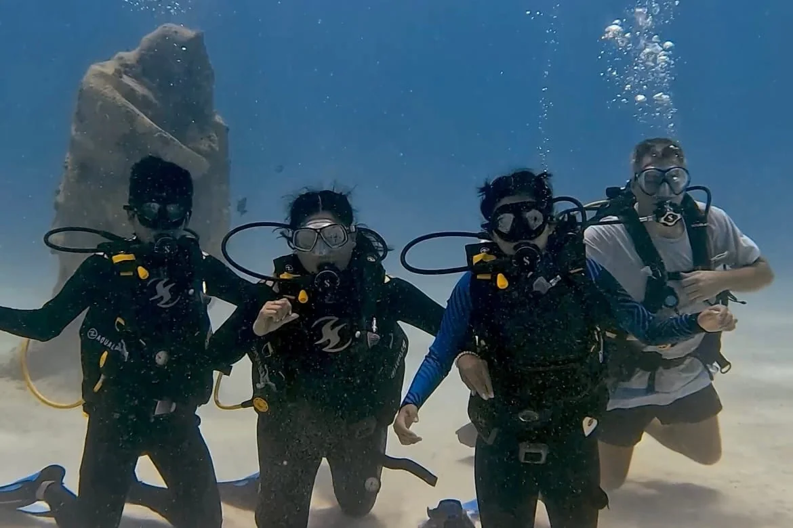

Try the underwater world
Start with a beginner introduction in Playa del Carmen: theory, confined-water practice and two ocean dives with an instructor. Neither of you needs certification. This is an introduction, rather than a qualification.
Xico · 5–6 hours · MXN 5,500 for two
Pencil in Friday 4 December only if the wedding programme allows. Otherwise consider Sunday 6, well rested. Keep Monday and Tuesday free of scuba.
